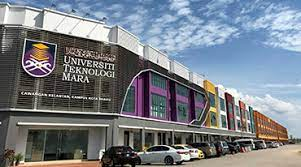

EDUCATION BACKGROUND
PRIMARY SCHOOL
Sekolah Kebangsaan Perupok is a National School located in Kampung Perupok, Bachok.The school is located near the beach. I studied here from 2007 to 2013.
SECONDARY SCHOOL
 Sekolah Menengah Kebangsaan Bachok is a National Secondary School located in Kampung Kemudi, Bachok. I studied in this school from form 1 to form 6. at that time the school was a pure science school. However, it has been changed, ie only certain classes need to take the pure science stream by taking the subjects of physics, chemistry, biology, addmath and one elective subject.
Sekolah Menengah Kebangsaan Bachok is a National Secondary School located in Kampung Kemudi, Bachok. I studied in this school from form 1 to form 6. at that time the school was a pure science school. However, it has been changed, ie only certain classes need to take the pure science stream by taking the subjects of physics, chemistry, biology, addmath and one elective subject.
UNIVERSITY
Teknologi MARA (UiTM), is the largest comprehensive university in Malaysia providing innovative education with state-of-the-art infrastructure and technology within reach at its 34 campuses, 4 colleges of studies, 13 faculties, and 9 academic centres all over the country. UiTM offers over 500 academic programmes at Foundation, Pre-Diploma, Diploma, Bachelor’s, Master’s, and PhD levels, as well as Professional Programmes. It continues to expand access to higher education, playing its role in nation-building by unleashing potentials and shaping the future.
Amongst its long list of recent accolades, UiTM is ranked 105th in the QS Asia University Rankings 2022, placed 651–700 in the QS World University Rankings 2022, and was ranked 361-380 for QS World University Rankings: Sustainability 2023 and 4th in Malaysia. The Hospitality and Leisure Management subject was placed 42nd best in the world, and overall, 14 UiTM subjects are ranked in the QS World University Rankings by Subject. Moreover, UiTM was in the 101-200th position in the Times Higher Education Impact Rankings 2022 and is the proud recipient of the 3G SDGs Championship Award 2022. In June 2022, UiTM received the Reader’s Digest Trusted Brand Gold Award for the 12th time in the public university category and for the first time, UiTM was bestowed The BrandLaureate BestBrands Awards 2022 – the Nation’s Pride Higher Education. The university ranked 150th in the UI GreenMetric (UIGM) World University Rankings 2021 and won gold for the Best International Print-Ads at the QS APPLE Creative Awards 2020.
With over 900,000 alumni in science, technology, ,humanities, and entrepreneurship,, UiTM offers opportunities to shape leaders at national, industry, and global levels and is well poised to become a globally renowned university by 2025.
Copyright 2023 University Technology MARA. All Right Reserved.
This website are for the purpose of assignment on HTML only.